Stem insects of white snakeroot, Ageratina altissima (Asteraceae)
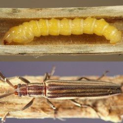
Summary Notes[?] Top
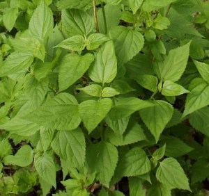
I have found more species of internal stem herbivores in white snakeroot (Ageratina altissima, the sole wild representative of the genus Ageratina in the study area) than in any other herbaceous plant I've studied. White snakeroot is the only herb from which I have reared two species of cerambycid stem borer (records 0675 & 0019, below). Co-occurence of two species of mordellid borer in a single hostplant species (records 0021 & 0727) has also been reported for other hosts in the literature: for example, Mordellistena convicta cryptic spp. 1 & 2 in stems and/or galls of Solidago gigantea and S. altissima (Abrahamson et al. 2003Abrahamson et al. 2003); mordellids including Mordellina pustulata from Gentiana andrewsii (Williams 1999Williams 1999; Lisberg & Young 2003Lisberg & Young 2003); and at least two Mordellistena and/or Mordellina spp. each from stems of Ambrosia trifida and A. artemisiifolia, Aster vimineus, Cirsium vulgare, Elephantopus carolinianus, Eupatorium serotinum, Solidago canadensis, Verbesina alternifolia, and Xanthium strumarium (Ford & Jackman 1996Ford & Jackman 1996).
Stem galls formed in the upper stems of white snakeroot need to be examined carefully in order to successfully determine their identities, because at least three different insects form somewhat similar galls. Galls of Asphondylia eupatorii (record 0632) may be formed in the upper stem, similar to the Neolasioptera gall described in record 0022. However, adults of the Asphondylia emerge before winter (Gagné 1989Gagné 1989), with exit holes sometimes visible on the evacuated galls late in the season (but Gagné [pers. comm., March 16, 2025] notes that such holes may sometimes be produced by exiting parasitoids). In addition, the single Asphondylia gall I observed housed its multiple larvae in relatively broad ovoid chambers, while larvae from the upper and lower stem Neolasioptera galls occurred either with little visible disturbance to the pith or in short, narrow, cylindrical tunnels. Eutreta sp. (Tephritidae) (record 0024) galls that I found were always located at a node on the stem, and the large, pale whitish or yellowish, anteriorly tapered maggot occurs singly, hollowing out the gall interior and forming its robust, pill-shaped puparium there, with the adult emerging before winter and the gall sometimes splitting open after the adult emerges, exposing the empty puparium.
Future work with the stem feeders of white snakeroot could focus on several areas, such as identifying the lepidopteran stem miner (record 0026) and elucidating whether all tephritid borer larvae (0029) belong to Strauzia rugosum. It would also be helpful to clarify the trophic role of the eurytomid (0023) and determine whether the diversity of apparent or confirmed Neolasioptera galls (0022) are all created by a single species.
Hostplant Species[?] Top
I found insects in stems or stemlike structures of the following hostplants within the genus Ageratina:
- Ageratina altissima (white snakeroot)
Record Details[?] Top
Record #0675. Stem borer. Coleoptera: Cerambycidae: Hippopsis lemniscata.
- Stages obs.: trace, larva, adult
- Hosts: A. altissima
I found a single larva of this borer in late March, overwintering in a dead stem of the host that was approximately 90-100cm tall and ~4mm in diameter at the base. The larva had tunneled out nearly the entire length of the stem, with the tunnel extending from the base of the stem up to about 10-15cm below the stem tip. Sections of the tunnel were filled with rods of compacted frass; two of these rods measured 8.5cm long and 7.2cm long. The compacted rods of frass alternated with stretches of open tunnel with variously smooth or slightly rough walls. The frass consisted of fine, neatly round pellets, reminiscent of the pellets produced by cerambycid borers in other plants I've examined. When it was ready to pupate, the larva prepared a chamber ~15cm long in the stem, the chamber itself completely cleared of frass but bounded on both ends by frass rods along with an accumulation of shavings. The adult emerged in early May, and Richards (2024)Richards (2024) identified it from photos.
Top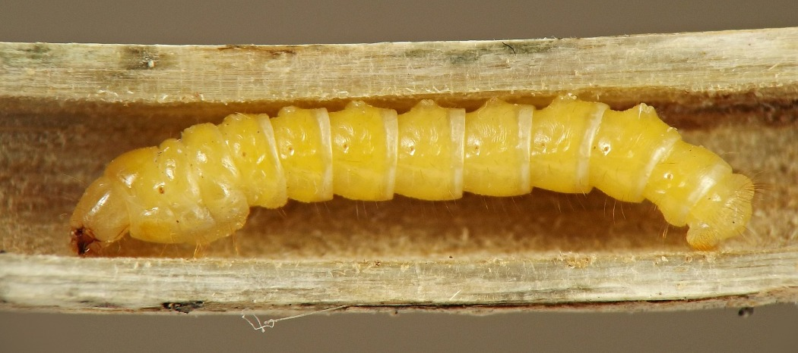
A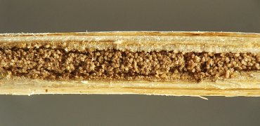
B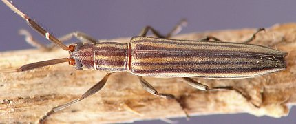
CRecord #0019. Stem borer. Coleoptera: Cerambycidae: Oberea tripunctata.
- Stages obs.: trace, pupa, adult
- Hosts: A. altissima
The larva of this borer, upon finishing its tunneling in the stem of the host, makes a cut around the inner circumference of the lower stem, causing the stem above this point to break off. The larva, still inside the remaining stem stump, then seals the open end of the stump with shavings and frass. Pupation is in a chamber in the stem stump below the plugged end. Chapman (2018)Chapman (2018) identified the adult I reared.
Top
Figure 0019.1. Oberea tripunctata. L-R: Tunneled white snakeroot stem cut by larva; frass in stem stump; pupa; adult.
TopRecord #0020. Stem borer. Coleoptera: Erotylidae: Languriini: cf. Acropteroxys gracilis.
- Stages obs.: trace, larva, adult
- Hosts: A. altissima
I found several A. gracilis larvae overwintering in their tunnels in dead stems of the host (one larva per stem). These larvae had accomplished most of their feeding while the stems were still alive and/or in the process of senescing during the previous summer and fall. I also found one larva in a living stem in August. All of the larvae were orangish in color, with relatively well-developed thoracic legs and a pair of sharply pointed, curved urogomphi on the posterior end.
The tunnel of a typical overwintering larva often extended along much of the length of the stem. Stretches of the tunnel were smooth-walled and clear of frass, while other regions of the tunnel were tightly packed with long rods of compacted frass. I usually found the larva in the lower portion of the tunnel.
Though the August larva was still somewhat early in development when I found it, its stem tunnel was already extensive. A photograph of a portion of the tunnel shows that its walls were smooth. A leaf attached to this stem contained a brownish mine that began at an oviposition site in the midrib and traveled down the petiole into the stem, but I hypothesized that this mine was the work of a mordellid larva that did not survive, rather than the work of the erotylid larva (see records 0021 & 0727); at least in Leucanthemum, Medicago, and Lupinus, oviposition by the erotylid Languria mozardi appears to be mostly or entirely restricted to the main stem rather than in a leaf midrib or petiole (Vaurie 1948Vaurie 1948; Tangren & Frye 2020Tangren & Frye 2020).
I reared multiple overwintering larvae to adulthood. These larvae pupated in their stem tunnels, and adults emerged in spring.
Top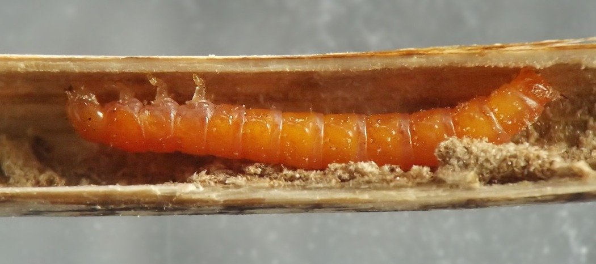
A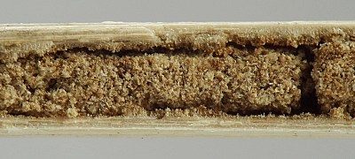
B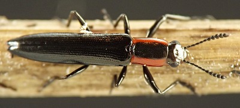
CRecord #0021. Stem borer. Coleoptera: Mordellidae.
- Stages obs.: trace, larva, pupa, adult
- Hosts: A. altissima
I have observed both whitish and yellowish mordellid larvae (all apparently belonging to this species) overwintering in their tunnels in dead stems of the host. Usually they were present in the lower portions of the stems near ground level, but in some shorter, less robust plants, I found them in the middle or even upper reaches of the stems. Their tunnels tended to be quite smooth-walled. In many cases a larva had packed an accumulation of very finely powdered whitish frass into the very base of the tunnel at or just above ground level.
Also, in mid-August I observed a larva tunneling in the lower portion of a petiole. Its tunnel was externally detectable as a brownish discoloration to the petiole. I found at least two other leaves with similarly affected petioles; in one case the tunnel appeared to stop abruptly at the petiole's attachment point to the stem and no larva was present, while in the other example, the tunnel began in the leaf midrib and proceeded down the petiole into the stem. An erotylid larva dwelled in the interior of the stem in the latter example, but given that I'd determined a mordellid larva to be responsible for a similar petiole tunnel in another A. altissima plant, I hypothesized that the erotylid larva was not responsible for the midrib and petiole feeding in this example, and that it had perhaps displaced a mordellid larva that had been responsible.
From the overwintering larvae, I reared several adults. Both larvae and adults showed a surprisingly large degree of variability in body length, and larval body color varied considerably as well, but reared adults were all fairly similar in coloration. The identity of these individuals is unknown as of 2025. Ford & Jackman (1996)Ford & Jackman (1996) reared Mordellistena rubrifascia from this host.
See also record 0727, below.
Top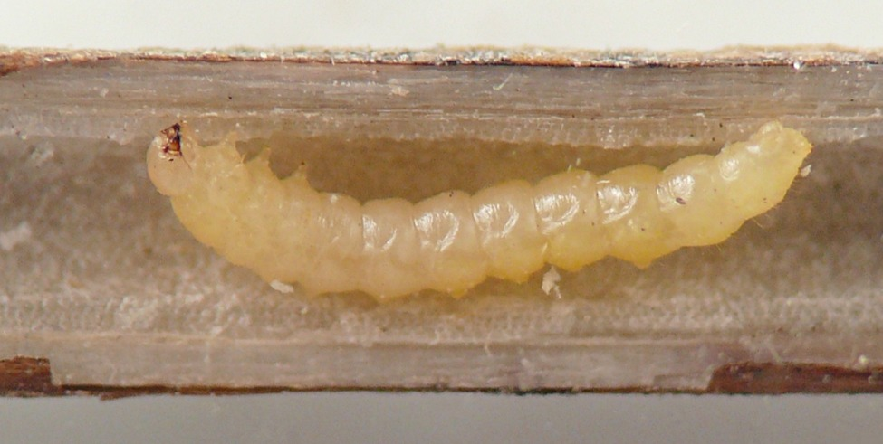
A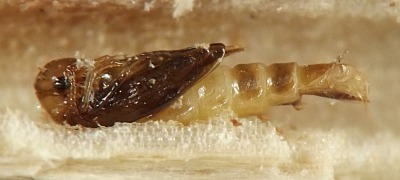
B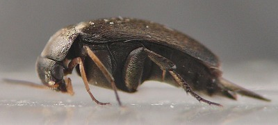
CRecord #0727. Stem borer. Coleoptera: Mordellidae: cf. Mordellina pustulata.
- Stages obs.: trace, pupa, adult
- Hosts: A. altissima
I collected a pupa in its tunnel in an overwintered dead stem of the host in late May. The adult, which eclosed by June 6, bore mottling on the elytra similar to that of Mordellina pustulata (Mordellistenini). Adults identified as M. pustulata have been previously reared from Eupatorium perfoliatum, E. serotinum, and Eutrochium maculatum (Lisberg & Young 2003Lisberg & Young 2003; Ford & Jackman 1996Ford & Jackman 1996; Williams 1999Williams 1999), all of which share the tribe Eupatorieae with Ageratina (Compositae Working Group 2025Compositae Working Group 2025).
See also record 0021, above.
Top
Figure 0727.1. Mordellidae: cf. Mordellina pustulata reared from pupa in stem of Ageratina altissima.
TopRecord #0030. Stem borer. Diptera: Agromyzidae.
- Stages obs.: trace, larva, pupa
- Hosts: A. altissima
I first encountered an agromyzid borer in white snakeroot in 2023, in the form of a puparium overwintering in a tunnel in the pith of an upper stem belonging to a short-statured plant. The plant had grown only ~18 inches tall in the shade of eastern red cedar (Juniperus virginiana) trees, and its outer stem diameter was only 1.75mm at the puparium's location in the upper stem. The puparium was a mere 2.0mm in length. Its posterior spiracular plates were dark brown, slightly elevated, and separated by approximately their own diameter, with roughly 8-10 bulbs each.
Later, I found similar puparia, most about 2.2mm in length but one 3.1mm long, and with up to 14 bulbs on the posterior spiracular plates, in the pith of variously-sized lower stems of the host. Most of the upper and lower stem puparia each contained a solitary parasitoid wasp larva along with a large deposit of black material (meconium?) pooled on the inner wall of the posterior portion of the puparium. My attempts to rear puparia to adulthood have so far only produced parasitoid wasps.
Additionally, I found a larva tunneling in the pith in the base of a wilted stem in July. Just below this larva's area of activity, the stem contained a caterpillar of a cochyline tortricid, cf. Aethes angustana sp. grp. (record 0025), whose work appeared to be the primary cause of the wilting. The agromyzid larva showed 8 and 11 bulbs in its posterior spiracles.
My initial looks at the posterior spiracles of the agromyzid larva and puparia weren't sufficient to provide much insight on how many agromyzid species might be represented in these observations. An adult female agromyzid identified as Melanagromyza virens has been previously reared from a puparium found overwintering in a stem of this host (Lonsdale 2021Lonsdale 2021). Spencer and Steyskal (1986)Spencer and Steyskal (1986) describe and illustrate a "strong central horn" on each of the posterior spiracular plates of the M. virens puparium, while the larva and puparia I found in white snakeroot showed either very short, stublike horns or none at all.
Despite examining many agromyzid puparia from inside white snakeroot stems, I have yet to find a viable one. This mirrors the situation with the tephritid borer (0029), in which internally-formed puparia often seem to be parasitized. With the tephritid, the pupation location for healthy larvae is generally in the soil, according to Stoltzfus (1988)Stoltzfus (1988), and it is possible this could be the case for the agromyzid as well, but more information is needed.
Top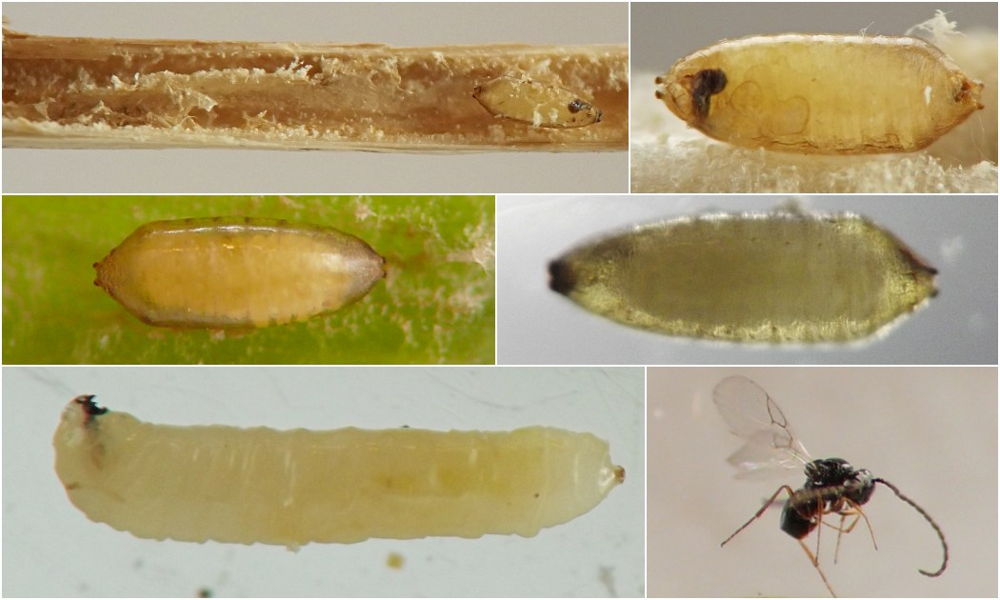
Figure 0030.1. Agromyzidae, borer from stems of white snakeroot. Top row, left: tunneled stem with puparium. Top row, right: Puparium. Middle row: More puparia, with the one on the right backlit, revealing the parasitoid larva inside. Bottom row, left: Larva. Bottom row, right: Wasp from a parasitized puparium.
TopRecord #0029. Stem borer. Diptera: Tephritidae: cf. Strauzia rugosum.
- Stages obs.: trace, larva, pupa
- Hosts: A. altissima
I observed several parasitized puparia of this borer in tunneled-out lower stems of the host, and reared an ichneumonoid wasp from one of these puparia in 2021. I also found a nearly mature larva in its tunnel in a lower stem of the host in the final days of August, 2024, and reared it to the puparium stage. I felt fairly confident these were all tephritids and specifically Strauzia sp., since (1) they were similar in all respects to third instar Strauzia larvae figured in Stoltzfus (1988)Stoltzfus (1988) and (2) I haven't been able to find a record of any other fly of this size tunneling in white snakeroot stems. However, I wanted to to confirm this identification so I sought to run the puparia through a key. I was not able to find a Diptera puparium key for the Nearctic fauna, but the puparia did key to Tephritidae in Smith (1989)Smith (1989).
Apparently the only tephritid borer previously recorded from Ageratina altissima is Strauzia rugosum, described from specimens collected in Ohio, Virginia and West Virginia by Stoltzfus (ibid.). Stoltzfus stated that larvae were found as late as October, with puparia formed no later than early November. The typical pupation location is evidently in the soil, and the puparia collected in the current study may have been formed in the stem because the individuals were parasitized.
On 1 November 2023, I found an affected stem whose top had broken off due to the tunneling in the stem interior. The borer's tunnel extended from roughly 15cm above the break point (in the upper portion of the stem), down to ground level in the lower portion of the stem, but did not appear to extend into the roots. The tunnel width, ragged tunnel walls, and the fact that the culprit abandoned the stem when mature (evidently in order to pupate off the plant) together suggested the tunneling was accomplished by a tephritid borer, but I was unable to confirm this identification because the larva was no longer present.
Some tunnels constructed by tephritids in this host (tentatively identified as such by the parasitized puparia found within them) contained particulate frass that had been cemented to the tunnel walls in aggregate, forming brittle hollow cylinders of agglomerated material. When removed from the tunnels and crushed, some of these cylinders crumbled easily into material reminiscent of solid frass produced by various Coleoptera and Lepidoptera larvae, while other cylinders merely fragmented into smaller chunks and did not easily crumble.
Strauzia rugosum is not to be confused with the Eutreta local feeder in stems of the same host (record 0024).
Top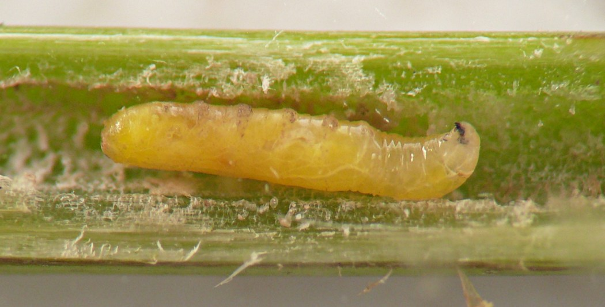
A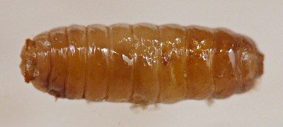
B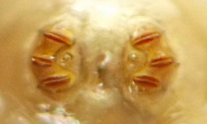
CFig. 0029.1. Tephritid borer, cf. Strauzia rugosum, from stems of white snakeroot.
- A: Larva.
- B: Puparium.
- C: Posterior spiracles of puparium.
Record #0027. Stem borer. Lepidoptera: Noctuidae: Papaipema sp.
- Stages obs.: trace, larva
- Hosts: A. altissima
In late May, I found a young shoot of the host containing a tunnel with an early- or middle-instar Papaipema larva inside. The shoot had wilted conspicuously as a result of the larva's tunneling. Because of the relatively small size of the shoot, the larva would presumably need to migrate to the roots or to another stem at some point in order to complete its development.
Top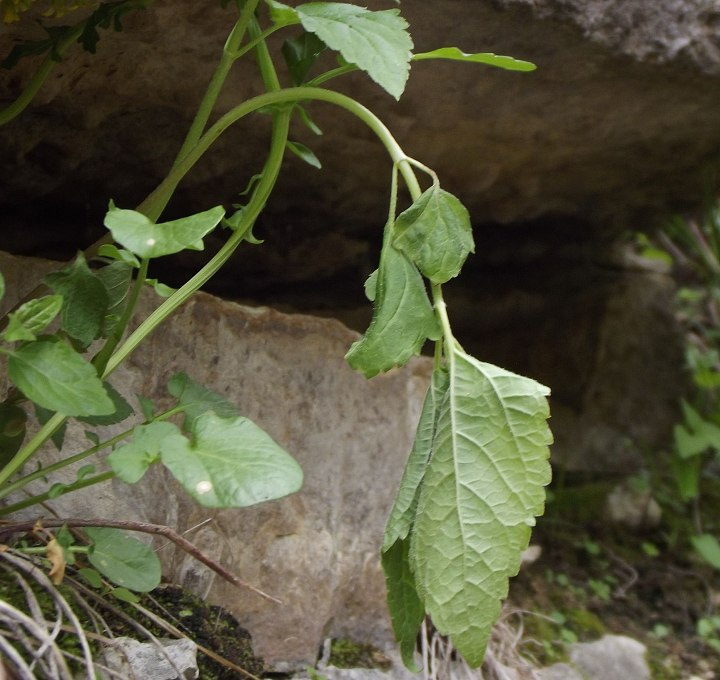
Figure 0027.1. Wilted shoot of Ageratina altissima in spring, with a Papaipema larva (not visible) tunneling inside.
TopRecord #0025. Stem borer. Lepidoptera: Tortricidae: Cochylini: cf. Aethes angustana sp. grp.
- Stages obs.: trace, larva, pupa, adult
- Hosts: A. altissima
A wilted stem of the host I located in early July contained a larva in its tunnel in the base of the stem and crown, with the larva's activities evidently having led to the plant wilting. An agromyzid larva (record 0030) was tunneling in the pith of the same stem, only a few millimeters above the tunnel system of the caterpillar. In its tunnel, the tortricid larva spun a loose, whitish, rather "messy" cocoon that incorporated some of the larva's frass, and the adult moth emerged in August. An image taken by Alexander (2012)Alexander (2012) in mid-August in New Jersey, USA and posted to BugGuide.net shows a moth that appears externally similar to this one perched on a white snakeroot leaf; the image is filed under "Aethes angustana species group." Comments posted with the image explain that Alexander had witnessed a similar-looking moth perched on white snakeroot plants at this location in the years before the photo was taken, leading her to wonder if white snakeroot might be the host plant. My rearing record in the current study would seem to support this hypothesis, although the adult has not yet been examined by a specialist in order to confirm its identity.
In addition to the July larva that was reared to adulthood, I found several larvae (not reared to adulthood) overwintering in the bases of white snakeroot stems. Details of the head capsule suggested these larvae could possibly belong to the same species as the individual reared to adulthood, but unfortunately this could not be confirmed. If true, it suggests that the moth might have two generations per year, with the first generation overwintering as larvae in dead stems and giving rise to adults in spring, and the second generation feeding as larvae in midsummer and producing adults by sometime in August.
Top
Figure 0025.1. Tortricidae: cf. Aethes angustana sp. grp. from white snakeroot. A: Plant wilting due to larva tunneling in stem and crown; B: larva; C: pupal exuviae; D: adult, dorsal; E: adult, lateral. All photos show the same individual.
TopRecord #0028. Stem borer. Lepidoptera: Tortricidae: Cochylini: cf. Cochylichroa avita.
- Stages obs.: trace, larva, pupa, adult
- Hosts: A. altissima
This borer's activities seem to usually occur in the middle to upper portions of white snakeroot stems; this may in part be a response to the fact that lower stems of the host are often occupied by mordellid, erotylid, or tephritid borers.
The larva of this moth feeds in the stem of the mature hostplant during late summer and autumn, excavating the pith completely in its relatively localized area of activity. As a result of the pith feeding, and sometimes also the external damage to the outer wall of the stem (discussed below), the stem is weakened at this point, and the topmost portion of the plant above the affected area may lodge conspicuously, signaling the presence of a larva inside. (In at least one example I observed, the stem did not lodge.) Because larval feeding frequently happens in the upper part of the stem, the lodged terminal portion of the plant may be only a decimeter or two in length.
Interiorly, frass accumulates in the larva's tunnel. The larva spends the winter and spring in the stem and pupates there in its second summer, sometimes within a thin membranous cocoon with the consistency of cellophane. When the adult is ready to emerge, the pupa is thrust partway out of the stem.
I reared adults in summer 2021 and 2023 from larvae collected in spring, after they had overwintered in the field. The individual successfully reared in 2021 was collected as a larva on 17 April but did not emerge as an adult until 30 June; the 2023 individual was collected as a larva on 07 June and emerged on 23 July. The late emergence time of the adult is perhaps not surprising given that the hostplant does not mature until late summer into autumn.
The forewing of the adult has a white ground color with patches of blue-gray and rusty orange scales. Similar-looking adults reared by Hatfield (2022)Hatfield (2022) emerged in autumn only a few weeks after the larvae had finished feeding. As larvae, these individuals fed externally on flowers and/or developing seeds in the inflorescence, and Hatfield photographed one of them feeding on a flower gall formed by Schizomyia eupatoriflorae (Diptera: Cecidomyiidae). Because of the similar larval phenology and adult morphology, I suggest that the larvae feeding in flowers and stems belong to the same species -- which would be Cochylichroa avita, based on M. Sabourin's determination of the Hatfield material (ibid.).
It is possible some individuals may feed first in the inflorescence of the plant and then migrate into the stem. At the weak point where they lodge, some stems show an irregularly-shaped hole in the outer wall of the stem (continuous with the inner pith tunneling), which appears to have contributed to the weakening of the stem and its eventual lodging. This external hole could be the result of the larva tunneling into the stem from the outside after having fed externally on flowers or fruit, but it could also be cut from the inside by a larva that was in the pith all along; further study would be needed in order to resolve this question. The adults I reared from upper stems have not yet been examined by a specialist in order to clinch their identity.
Top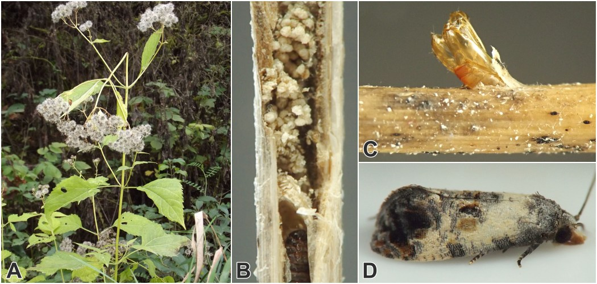
Figure 0028.1. Tortricidae: cf. Cochylichroa avita in stems of white snakeroot. A: Host plant in autumn, with upper portion of stem lodged due to larva's tunneling; B: larva in stem tunnel with frass; C: pupal exuviae protruding from upper stem after adult's successful emergence; D: adult.
TopRecord #0026. Stem miner. Lepidoptera: ?Gracillariidae.
- Stages obs.: trace
- Hosts: A. altissima
I located multiple examples of this miner in late August through mid-October, after the larvae had vacated the plant material. One mine I found in mid-July was also apparently vacant. In some cases, the externally visible linear stem mine was bound between two adjacent nodes of the stem, and it wound up and down along the length of the internode, crisscrossing and overlapping itself so as to effectively create a blotch mine in which most of the internode assumed a brownish discoloration. Close examination of the mine revealed a narrow, broken central frass line appearing like a string of dots and dashes. In at least two other examples, the mine wandered across multiple internodes, with only a portion of the surface tissue of each internode affected.
I have observed the distinctive pattern of brownish stem mining bound between two nodes on other plants, including leaf-cup (Asteraceae: Polymnia canadensis) and Culver's root (Plantaginaceae: Veronicastrum virginicum). An early-stage stem mine on the former host, which did not exhibit the pattern of being restricted between two nodes (perhaps because the mine was still in the beginning stages), contained a Lepidoptera larva that appeared to belong to the family Gracillariidae. In addition, one of the Veronicastrum mines contained a Lepidoptera head capsule that was superficially consistent with the family Gracillariidae. Given this fact along with certain characteristics of the white snakeroot mines, such as their very shallow penetration into the stem tissue and the occurence of a central frass line, I propose that the white snakeroot miner is also a gracillariid, but this has yet to be confirmed. Since I haven't observed any bark flaps or other signs of pupae in the white snakeroot mines, I believe pupation is off the plant or at least not within the mine.
Top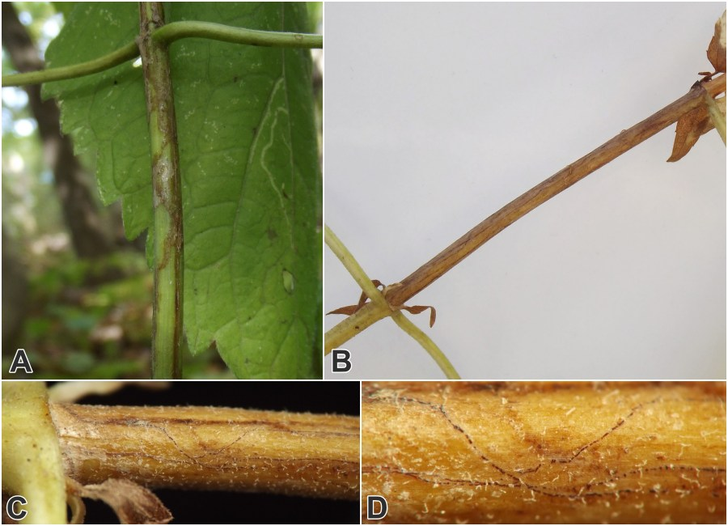
Figure 0026.1. Lepidoptera: ?Gracillariidae, stem miner on white snakeroot. A: Stem mine; B: An example where the mining is confined between two adjacent nodes, resulting in the internode turning a dark brown color; C: Closer view of affected internode just above node, showing brown discoloration and linear frass trails of larva; D: crisscrossing mines of larva with irregularly broken "dots-and-dashes" central frass lines.
TopRecord #0632. Local feeder in stem. Diptera: Cecidomyiidae: Asphondylia eupatorii.
- Stages obs.: trace
- Hosts: A. altissima
In September, I located a single polythalamous stem gall of this local feeder near the tip of an upper stem. The gall featured 2 exit holes and 8 individual chambers lined with whitish fungus, with the exit holes each opening from one of the chambers. At least 2 of the chambers -- apparently the same ones with exit holes leading to the outside world -- had insect exoskeleton remains in them, but most of the other chambers appeared to be empty, and these empty chambers also did not have obvious holes leading to the outside of the gall. Any insects that had successfully developed in the gall had already emerged, and this fact and all other characteristics of the gall closely match the description of Asphondylia eupatorii in Gagné (1989)Gagné (1989). Compare with the Neolasioptera galls on this host (record 0022).
Top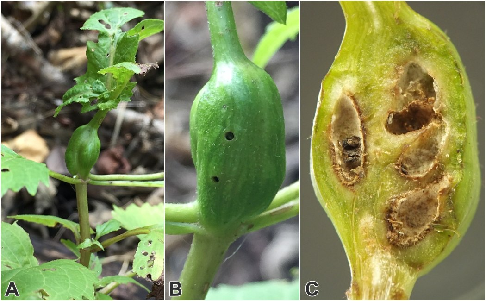
Figure 0632.1. Asphondylia eupatorii in white snakeroot. A: Terminal stem gall; B: Detail of stem gall showing exit holes; C: Interior of evacuated gall, showing empty chambers formerly occupied by larvae or pupae of the midge or its parasitoid(s).
TopRecord #0022. Local feeder in petiole and stem. Diptera: Cecidomyiidae: Neolasioptera sp..
- Stages obs.: trace, larva, pupa, adult
- Hosts: A. altissima
I found the gall midges included in this record in at least three situations in white snakeroot plants: (1) within leaf petioles that showed discoloration but essentially no swelling, (2) in lumpy, somewhat irregular, spindle-shaped to ovoid galls in upper stems, and (3) in ovoid to subglobular stem galls near the base of the stems, with some galls clustered in groups. Larvae from (1) have been confirmed as belonging to the genus Neolasioptera (see below), while larvae from (2) and larvae and adults from (3) are as yet unidentified beyond family level.
I located the first example of a petiole feeder in 2018, in the form of a pupal exuvium protruding from a discolored area on a petiole; inside the petiole was an apparent cecidomyiid cocoon in which the posterior end of the exuvium was still hidden, and next to the cocoon was the pupa of a wasp that had evidently parasitized a second cecidomyiid that had been present in the petiole. In October 2020, I found two petioles that each contained multiple yellowish or orangish Neolasioptera larvae in their interiors; in one of the petioles, larvae were located in a spot about halfway along the length of the petiole, with nothing but a slight crook in the petiole and some subtle outward discoloration to reveal their presence; in the other petiole, the larvae were clustered within the base of the petiole right where it joined the stem, and the leaf had prematurely wilted. R.J. Gagné (pers. comm., November 2, 2021) identified these larvae as Neolasioptera sp.
I encountered several examples of the slender, irregular upper stem galls in living and senesced stems. Two of these, in overwintering dead stems, were partially hollow inside and filled with black fungal material, but they contained no larvae so there remained some uncertainty as to the culprit. A third example (panel A in figure 0022.1, below) I found on a living stem in late summer. I overwintered the gall indoors and found that it contained multiple larvae in the pith (panel F below) accompanied by some black fungal discoloration. The larvae's general appearance and the gall characteristics were reminiscent of Neolasioptera, but the larvae have not yet been identified to genus or species.
The subglobular stem galls occur singly or in clusters near the base of the stem, within ~20cm of ground level. In one example I observed, the larva overwintered in the gall and the adult emerged in spring. In another example, the gall was closer to ovoid in shape, 11mm long by 5.5mm wide, and it contained at least 11 larvae who overwintered in the gall and emerged as adults in spring. These galls may alternatively produce eurytomid wasps (see record 0023), who seem to conduct at least some of their feeding on gall tissue, perhaps after consuming the original cecidomyiid inhabitant.
Top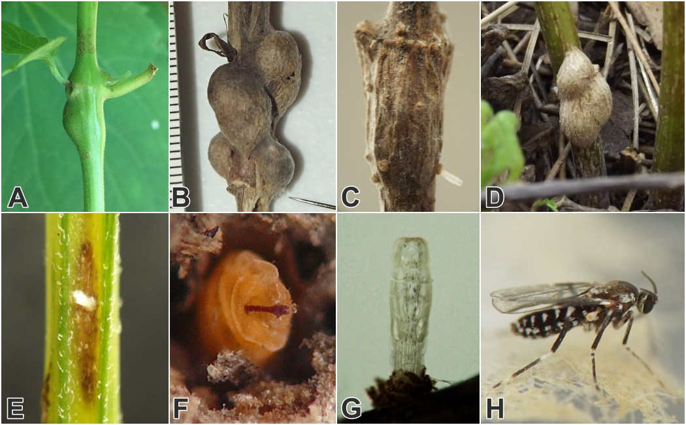
Figure 0022.1. Cecidomyiidae: cf. Neolasioptera in white snakeroot. A: Gall in upper stem; B-D: Galls formed near bases of stems, with several galls forming a cluster in B and D, and in C the pupal exuviae of a newly emerged adult protruding from the gall; E: Affected leaf petiole with protruding pupal exuviae of recently emerged adult; F: Larva from upper stem gall; G: Pupal exuviae protruding from lower stem gall after adult's successful emergence; H: Adult from lower stem gall.
TopRecord #0032. Local feeder in stem. Diptera: Cecidomyiidae: Resseliella sp.
- Stages obs.: trace, larva
- Hosts: A. altissima
In July 2023, I discovered numerous orangish or pale pinkish larvae living gregariously in the somewhat airy pith of two lower stems of the host. There was a limited brownish discoloration to the pith in the area where the larvae dwelled, but no external sign of their presence in the stems was observed. The larvae were identified to genus by R.J. Gagné from photos (pers. comm., March 2, 2024).
Later, in late July 2025, I collected a white snakeroot stem in my yard that showed an externally blackened region. Over the next few weeks, larvae I tentatively identified as Resseliella emerged from this portion of the stem and pupated naked (i.e., without a cocoon) in the potting mix at the bottom of the rearing container or in between layers of moist paper toweling appressed to the side of the container. Several adults emerged in the final days of August and first days of September.
Top
Figure 0032.1. Resseliella larvae in stem of white snakeroot.
TopRecord #0024. Local feeder in stem. Diptera: Tephritidae: Eutreta sp.
- Stages obs.: trace, pupa, adult
- Hosts: A. altissima
Forms a gall in the upper stem. I observed two examples in August and a third in September, and found at least one additional, uninhabited example on a dead stem in winter. All of these galls were formed at a node on the upper stem, with the growth of the stem and leaves above the affected node becoming stunted. One of the August galls was ovoid, roughly 10-12mm long and ~8mm wide, and the other was about the same size but with a somewhat less pronounced swelling. The inner walls of the August galls were rough-textured with a dark brown color, and each gall contained a modest amount of granular frass accumulation and an intact tephritid puparium. The puparia were a yellowish-brown color overall with the anterior end darkened to nearly black. The gall observed in September had ruptured, perhaps in part as a result of the adult fly's recent emergence, resulting in the blackened gall interior becoming partially exposed, which revealed the spent puparium inside. Despite this large exposed wound, the leaves issuing from the node and the short length of stem above the node were still alive. The gall found on a dead stem in winter also displayed a large hole resulting from the adult's emergence in the previous summer, and the empty puparium was still inside the gall.
A puparium from one of the August galls produced an adult Eutreta on August 13. Similar galls on Eutrochium, Polymnia, and Galinsoga (all Asteraceae) that I found in the same local geographic area also produced adults belonging to the genus Eutreta.
Top
Figure 0024.1. Eutreta sp., tephritid gallmaker in stems of white snakeroot. A-D: Field photos of galls, with the galls in A and B shown in mid-August when still inhabited by a Eutreta larva or puparium, and the galls in C and D shown in fall and winter after having been long since abandoned by the emerging adult fly; E: interior of active gall, showing intact puparium; F: puparium from gall; G: adult; H: interior of abandoned gall in winter, showing spent puparium from which an adult fly emerged during the previous growing season.
TopRecord #0023. Local feeder in stem. Hymenoptera: Eurytomidae.
- Stages obs.: trace, larva, adult
- Hosts: A. altissima
The feeding site of this insect is a subglobular stem gall on white snakeroot. Galls may occur singly or in clusters, and all examples noted have been on the lower stems within ~20cm of the ground. Insects I reared from these galls include a cecidomyiid (cf. Neolasioptera sp.) and these wasps, which belong to the family Eurytomidae as determined by Hill (2023)Hill (2023) and Zuparko (2023)Zuparko (2023). The ?Neolasioptera is probably the original gallmaker (see record 0022). However, two galls that produced eurytomid wasps contained solid, rather large-grained frass, which is not typically produced by Neolasiopteras, and the frass had accumulated in a curving tunnel whose diameter seemed too large for a typical Neolasioptera tunnel.
Given these peculiarities, I hypothesize that the wasp may be both a phytophage and an entomophage -- i.e., one of the species of Eurytomidae that is known to feed first on an insect gallmaker and then on the plant tissue inside the gall in order to complete its development. This would explain the situation neatly -- the significantly larger size of the wasp, the accumulations of solid granular frass in the wasp-producing galls, the relatively broad tunnel width inside the wasp-producing galls, and the fact that some galls give rise to ?Neolasiopteras instead. It is also conceivable that, in galls that contain multiple cecidomyiid larvae, the eurytomid larva consumes them all in order to complete its development, accounting for its larger size; in this instance the frass would be a result of the wasp larva excavating the gall interior (but not necessarily consuming the excavated material) in order to reach the multiple cecidomyiid larvae.
For examples of publications citing previously known cases in which a eurytomid has been observed to feed first on an insect gallmaker and then on plant tissue, or to move through a gall and consume multiple gallmaker larvae, see Saghaei et al. (2018)Saghaei et al. (2018) and Noyes (2004)Noyes (2004).
Top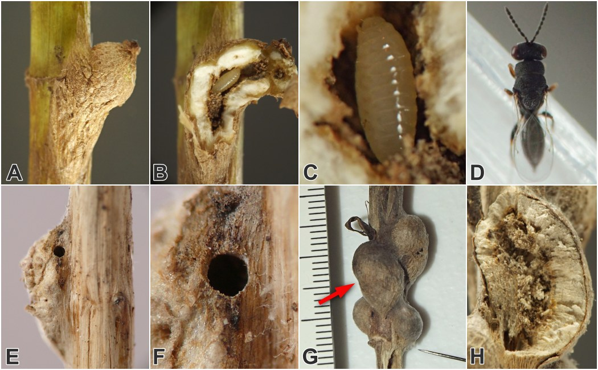
Figure 0023.1. Eurytomid local feeder in stems of white snakeroot. A: inhabited gall; B: interior of gall from A, showing larva in central curved tunnel; C: larva; D: adult; E: exit hole in another gall after adult's emergence; F: closeup of exit hole; G: cluster of galls on lower stem, with the gall indicated by the red arrow having produced a eurytomid wasp and the gall indicated by the black pin having produced a ?Neolasioptera gall midge; H: interior of eurytomid-producing gall from G, showing central curved tunnel with accumulated frass.
TopAdditional Images[?] Top
Record 0020 - Erotylidae: Languriini: cf. Acropteroxys gracilis
{kind=link}
{kind=link}
Record 0021 - Mordellidae
{kind=link}
{kind=link}
{kind=link}
{kind=link}
Record 0030 - Agromyzidae
{kind=link}
{kind=link}
Record 0029 - Tephritidae: cf. Strauzia rugosum
{kind=link}
{kind=link}
{kind=link}
{kind=link}
{kind=link}
{kind=link}
{kind=link}
{kind=link}
Record 0028 - Tortricidae: Cochylini: cf. Cochylichroa avita
{kind=link}
{kind=link}
{kind=link}
{kind=link}
{kind=link}
{kind=link}
{kind=link}
Record 0032 - Cecidomyiidae: Resseliella sp.
{kind=link}
{kind=link}
{kind=link}
Record 0024 - Tephritidae: Eutreta sp.
{kind=link}
{kind=link}
{kind=link}
References[?] Top
- Abrahamson, W. G., Blair, C. P., Eubanks, M. D., and S.A. Morehead. 2003. Sequential radiation of unrelated organisms: the gall fly Eurosta solidaginis and the tumbling flower beetle Mordellistena convicta. Journal of Evolutionary Biology 16(5): 781-789.(Summary Notes)
- Alexander, Y. 2012. Aethes angustana. Contributor post at BugGuide.net. Retrieved February 22, 2024 from https://bugguide.net/node/view/690471/.(0025)
- Chapman, E. 2018. Comment on contributor post at BugGuide.net. Retrieved July 2, 2024 from https://bugguide.net/node/view/1559958.(0019)
- Compositae Working Group (CWG). 2025. Global Compositae Database. Eupatorieae Cass.. Retrieved July 13, 2025 from https://www.compositae.org/gcd/aphia.php?p=taxdetails&id=1074859.(0727)
- Ford, E.J. and J.A. Jackman. 1996. New larval host plant associations of tumbling flower beetles (Coleoptera: Mordellidae) in North America. The Coleopterists' Bulletin 50(4): 361-368.(Summary Notes00210727)
- Gagné, R.J. 1989. The plant-feeding gall midges of North America. Cornell University Press: Ithaca, New York.(Summary Notes0632)
- Hatfield, MJ. 2022. Tortricidae, head in white snakeroot gall. Contributor post at BugGuide.net. Retrieved February 23, 2024 from https://bugguide.net/node/view/2189677.(0028)
- Hill, R. 2023. Comment on contributor post at BugGuide.net. Retrieved November 12, 2023 from https://bugguide.net/node/view/2312449.(0023)
- Lisberg, A.E. and D.K. Young. 2003. An annotated checklist of Wisconsin Mordellidae (Coleoptera). Insecta Mundi 17(3-4): 195-202.(Summary Notes0727)
- Lonsdale, O. 2021. Manual of North American Agromyzidae (Diptera, Schizophora), with revision of the fauna of the “Delmarva” states. ZooKeys 1051: 1–481. DOI: https://doi.org/10.3897/zookeys.1051.64603.(0030)
- Noyes, J.S. 2004. Notes on families: Eurytomidae. In Universal Chalcidoidea Database. World Wide Web electronic publication. Retrieved November 12, 2023 from https://www.nhm.ac.uk/our-science/data/chalcidoids/eurytomidae.html.(0023)
- Richards, B. 2024. Comment on contributor post at BugGuide.net. Retrieved July 6, 2024 from https://bugguide.net/node/view/2354008. (0675)
- Saghaei, N., Fallahzadeh, M., and H. Lotfalizadeh. 2018. Annotated catalog of Eurytomidae (Hymenoptera: Chalcidoidea) from Iran. Trans. Amer. Ent. Soc. 144:263-293.(0023)
- Smith, K.G.V. 1989. An introduction to the immature stages of British flies. Handbooks for the identification of British insects, vol. 10, part 14.(0029)
- Spencer, K.A., and G.C. Steyskal. 1986. Manual of the Agromyzidae (Díptera) of the United States. U.S. Dept. of Agriculture, Agriculture Handbook No. 638.(0030)
- Stoltzfus, W.B. 1988. The taxonomy and biology of Strauzia (Diptera: Tephritidae). Jour. Iowa Acad. Sci. 95(4): 117-126.(00300029)
- Tangren, S.A. and C.T. Frye. 2020. Clover stem borer infestation in sundial lupine: recognition and consequences. Natural Areas Journal 40(2):121–128.(0020)
- Vaurie, P. 1948. A review of the North American Languriidae. Bulletin of the American Museum of Natural History 92(3): 119-156 + 2 figs.(0020)
- Williams, A.H. 1999. Fauna overwintering in or on stems of Wisconsin prairie forbs. Proceedings of the North American Prairie Conference 16: 156-161.(Summary Notes0727)
- Zuparko, B. 2023. Comment on contributor post at BugGuide.net. Retrieved November 12, 2023 from https://bugguide.net/node/view/2312446.(0023)
Page created: late 2024. Last update: March 20, 2026